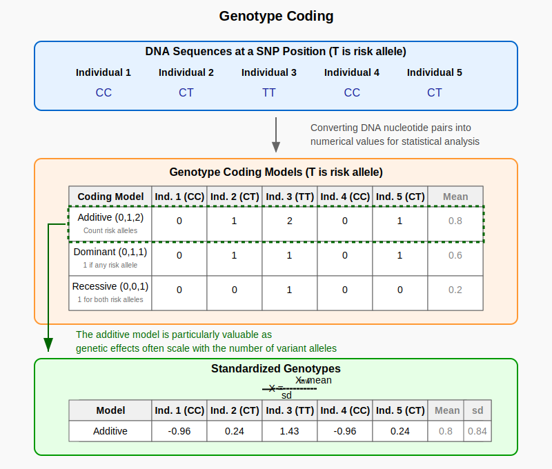

Genotype Coding¶
Genotype coding converts DNA nucleotide pairs into numerical values for statistical analysis, with the additive model being particularly valuable because genetic effects often accumulate proportionally with each additional copy of a variant.
Graphical Summary¶

Key Formula¶
We use \(\mathbf{X}_\text{raw}\) to denote the Raw Genotype Matrix (an \(N \times M\) matrix representing genotypes for \(N\) individuals at \(M\) variants)
For diploid organisms, using different coding models:
Additive model: takes value from \(\{0, 1, 2\}\) (count of alternative alleles)
Dominant model: takes value from \(\{0, 1\}\) (1: presence of alternative allele)
Recessive model: takes value from \(\{0, 1\}\) (two copies of alternative allele required for 1)
Standardized Genotype Matrix \(\mathbf{X}\): Normalized version of \(\mathbf{X}_\text{raw}\)
For each column \(j\) (variant):
Where:
\(\mu_j = \frac{1}{N}\sum_{i=1}^{N} X_{\text{raw},ij}\) (mean of variant \(j\))
\(\sigma_j = \sqrt{\frac{1}{N}\sum_{i=1}^{N} (X_{\text{raw},ij} - \mu_j)^2}\) (standard deviation of variant \(j\))
Technical Details¶
Three models¶
For diploid organisms (with two copies of each chromosome, e.g., human), we use different coding models:
Additive model: takes value from \(\{0, 1, 2\}\)
0: Homozygous for reference allele (AA)
1: Heterozygous (Aa)
2: Homozygous for alternative allele (aa)
Represents the count of alternative alleles
Dominant model: takes value from \(\{0, 1\}\)
0: Homozygous for reference allele (AA)
1: Either heterozygous or homozygous for alternative allele (Aa or aa)
Represents the presence of at least one copy of the alternative allele
Recessive model: takes value from \(\{0, 1\}\)
0: Either homozygous for reference allele or heterozygous (AA or Aa)
1: Homozygous for alternative allele (aa)
Represents when both copies of the alternative allele are present
Standardized Genotype Matrix¶
\(\mathbf{X}\) is a normalized version of \(\mathbf{X}_\text{raw}\) where each variant is scaled to have mean 0 and variance 1.
For each column \(j\) (variant):
\(\mu_j = \frac{1}{N}\sum_{i=1}^{N} X_{\text{raw},ij}\) (mean of variant \(j\))
Represents the average number of alternative alleles at variant \(j\) in the sample
\(\sigma_j = \sqrt{\frac{1}{N}\sum_{i=1}^{N} (X_{\text{raw},ij} - \mu_j)^2}\) (standard deviation of variant \(j\))
Measures the variability in the number of alternative alleles at variant \(j\)
This standardization ensures that:
Each column of \(\mathbf{X}\) has mean 0
Each column of \(\mathbf{X}\) has variance 1
The standardized values reflect the deviation from the population mean in units of standard deviation
Example¶
In this example, we generate the raw genotype data for five individuals across three genetic variants. We then encode these genotypes using three different genetic models: dominant, additive, and recessive. Finally, we standardize each encoded column to have a mean of 0 and a standard deviation of 1.
# Clear the environment
rm(list = ls())
# Define genotypes for 5 individuals at 3 variants
# These represent actual alleles at each position
# For example, Individual 1 has genotypes: CC, CT, AT
genotypes <- c(
"CC", "CT", "AT", # Individual 1
"TT", "TT", "AA", # Individual 2
"CT", "CT", "AA", # Individual 3
"CC", "TT", "AA", # Individual 4
"CC", "CC", "TT" # Individual 5
)
# Reshape into a matrix
geno_matrix <- matrix(genotypes, nrow=5, ncol=3, byrow=TRUE)
rownames(geno_matrix) <- paste("Individual", 1:5)
colnames(geno_matrix) <- paste("Variant", 1:3)
The raw genotype matrix is:
geno_matrix
| Variant 1 | Variant 2 | Variant 3 | |
|---|---|---|---|
| Individual 1 | CC | CT | AT |
| Individual 2 | TT | TT | AA |
| Individual 3 | CT | CT | AA |
| Individual 4 | CC | TT | AA |
| Individual 5 | CC | CC | TT |
# Define alternative alleles for each variant
alt_alleles <- c("T", "C", "T")
names(alt_alleles) <- colnames(geno_matrix)
The alternative alleles for the three variants are assigned as:
alt_alleles
- Variant 1
- 'T'
- Variant 2
- 'C'
- Variant 3
- 'T'
# Convert to raw genotype matrix using the additive / dominant / recessive model
Xraw_additive <- matrix(0, nrow=nrow(geno_matrix), ncol=ncol(geno_matrix)) # dount number of non-reference alleles
Xraw_dominant <- matrix(0, nrow=nrow(geno_matrix), ncol=ncol(geno_matrix)) # presence of alternative allele
Xraw_recessive <- matrix(0, nrow=nrow(geno_matrix), ncol=ncol(geno_matrix)) # two copies of alternative allele required
rownames(Xraw_additive) <- rownames(Xraw_dominant) <- rownames(Xraw_recessive) <- rownames(geno_matrix)
colnames(Xraw_additive) <- colnames(Xraw_dominant) <- colnames(Xraw_recessive) <- colnames(geno_matrix)
for (i in 1:nrow(geno_matrix)) {
for (j in 1:ncol(geno_matrix)) {
alleles <- strsplit(geno_matrix[i,j], "")[[1]]
Xraw_additive[i,j] <- sum(alleles == alt_alleles[j])
Xraw_dominant[i,j] <- as.integer(any(alleles == alt_alleles[j]))
Xraw_recessive[i,j] <- as.integer(all(alleles == alt_alleles[j]))
}
}
Raw genotype matrix (Additive model: count of alternative alleles):
Xraw_additive
| Variant 1 | Variant 2 | Variant 3 | |
|---|---|---|---|
| Individual 1 | 0 | 1 | 1 |
| Individual 2 | 2 | 0 | 0 |
| Individual 3 | 1 | 1 | 0 |
| Individual 4 | 0 | 0 | 0 |
| Individual 5 | 0 | 2 | 2 |
Dominant model matrix (1 if any alternative allele is present):
Xraw_dominant
| Variant 1 | Variant 2 | Variant 3 | |
|---|---|---|---|
| Individual 1 | 0 | 1 | 1 |
| Individual 2 | 1 | 0 | 0 |
| Individual 3 | 1 | 1 | 0 |
| Individual 4 | 0 | 0 | 0 |
| Individual 5 | 0 | 1 | 1 |
Recessive model matrix (1 if both alleles are alternative):
Xraw_recessive
| Variant 1 | Variant 2 | Variant 3 | |
|---|---|---|---|
| Individual 1 | 0 | 0 | 0 |
| Individual 2 | 1 | 0 | 0 |
| Individual 3 | 0 | 0 | 0 |
| Individual 4 | 0 | 0 | 0 |
| Individual 5 | 0 | 1 | 1 |
# Standardize each raw genotype matrix
X_additive <- scale(Xraw_additive, center=TRUE, scale=TRUE)
X_dominant <- scale(Xraw_dominant, center=TRUE, scale=TRUE)
X_recessive <- scale(Xraw_recessive, center=TRUE, scale=TRUE)
Standardized genotype matrix (Additive model):
X_additive
| Variant 1 | Variant 2 | Variant 3 | |
|---|---|---|---|
| Individual 1 | -0.6708204 | 0.2390457 | 0.4472136 |
| Individual 2 | 1.5652476 | -0.9561829 | -0.6708204 |
| Individual 3 | 0.4472136 | 0.2390457 | -0.6708204 |
| Individual 4 | -0.6708204 | -0.9561829 | -0.6708204 |
| Individual 5 | -0.6708204 | 1.4342743 | 1.5652476 |
Standardized genotype matrix (Dominant model):
X_dominant
| Variant 1 | Variant 2 | Variant 3 | |
|---|---|---|---|
| Individual 1 | -0.7302967 | 0.7302967 | 1.0954451 |
| Individual 2 | 1.0954451 | -1.0954451 | -0.7302967 |
| Individual 3 | 1.0954451 | 0.7302967 | -0.7302967 |
| Individual 4 | -0.7302967 | -1.0954451 | -0.7302967 |
| Individual 5 | -0.7302967 | 0.7302967 | 1.0954451 |
Standardized genotype matrix (Recessive model):
X_recessive
| Variant 1 | Variant 2 | Variant 3 | |
|---|---|---|---|
| Individual 1 | -0.4472136 | -0.4472136 | -0.4472136 |
| Individual 2 | 1.7888544 | -0.4472136 | -0.4472136 |
| Individual 3 | -0.4472136 | -0.4472136 | -0.4472136 |
| Individual 4 | -0.4472136 | -0.4472136 | -0.4472136 |
| Individual 5 | -0.4472136 | 1.7888544 | 1.7888544 |
Supplementary¶
Beyond SNPs: Encoding Different Variant Types¶
While we commonly encode SNPs, the same principles apply to other genetic variants:
Insertions and Deletions (Indels)
Small insertions or deletions in DNA sequence
Typically encoded using the same 0/1/2 scheme as SNPs
Copy Number Variations (CNVs)
Deletions or duplications of larger DNA segments
Can be encoded as actual copy number (0, 1, 2, 3, etc.)
Structural Variants
Inversions, translocations, and complex rearrangements
Often encoded as binary (presence/absence)
The choice of encoding scheme should reflect the biological hypothesis about how the variant affects the phenotype. For more information, refer to Figure 1 in Cardoso et al., 2015.
){kind=link}